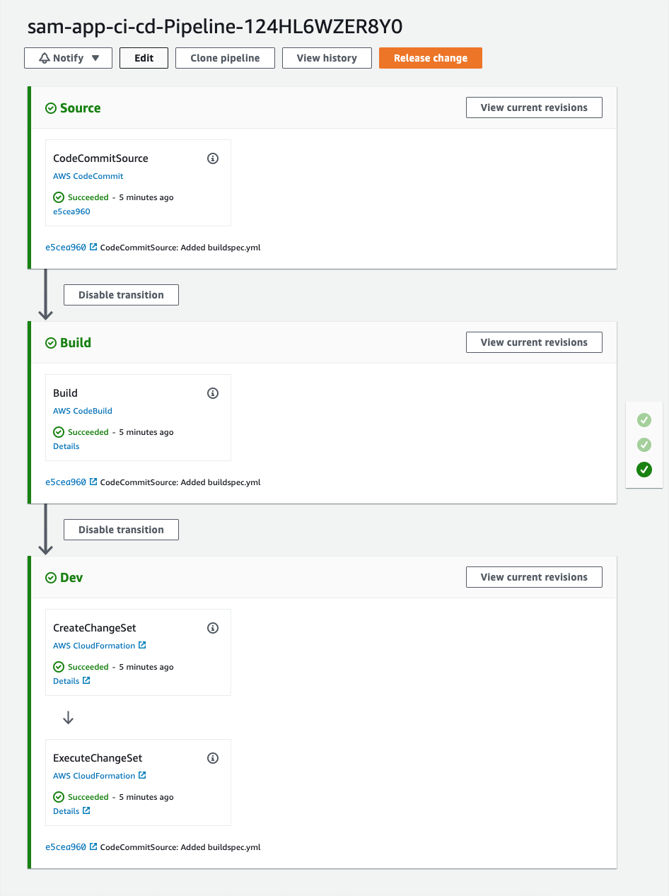

Once you push the buildspec.yaml file into the code repository, the pipeline should trigger automatically. This time, the build step should succeed along with the deployment steps.

This pipeline performs deployments using CloudFormation ChangeSets. If you are not familiar with them, you can learn about them here: https://docs.aws.amazon.com/AWSCloudFormation/latest/UserGuide/using-cfn-updating-stacks-changesets.html.